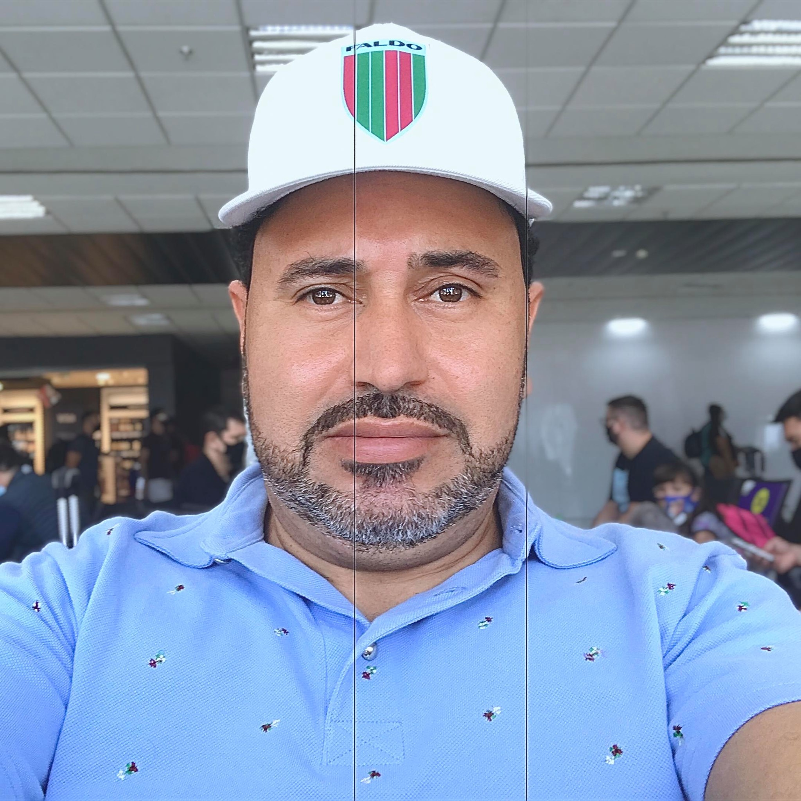

Eliseu Fermino dos Santos

Summary
Eu adoro desenvolver, amo o que eu faço. Sou dedicado e pontual.
Education
- Ciência da Computação (em andamento)
- Business Intelligence SQL - ETL Integration Services
- Técnico em Contabilidade
- 10774AC - Querying Microsoft® SQL Server® 2012 - Green - SP
- 10775AC - Administering Microsoft® SQL Server® 2012 Databases10775AC - Administering Microsoft® SQL Server® 2012 Databases - Green - SP
- 10777AC - Implementing a Data Warehouse with Microsoft® SQL Server® 201210777AC - Implementing a Data Warehouse with Microsoft® SQL Server® 2012
Green - SP
- 20463 -Implementing a Data Warehouse with Microsoft® SQL Server® 2014
- Bootstrap
- C# with Microsoft© Visual Studio© 2010C# with Microsoft© Visual Studio© 2010
KA Solution - SP
- Calculadora HP12-CCalculadora HP12-C - SENAC
- Curso HTML5 - Homologado pelo W3CCurso HTML5 - Homologado pelo W3C
On-Line
- Desenvolvimento Pessoal - Dale Carnegie
- Developing Data Access Solutions with Microsoft© Visual Studio© 2010Developing Data Access Solutions with Microsoft© Visual Studio© 2010
KA Solution - SP
- HTML and CSSHTML and CSS - UTFPR - Universidade Tecn/li>
- Harmonia - Berklee College of Music
-
Improvisação no Piano - Conservatório de MPB de Curitiba
- Music Education and TheoryMusic Education and Theory -
Mark Harrison
- Piano - Conservatório de MPB de Curitiba
-
SQL SERVER 2008 - Banco de DadosSQL SERVER 2008 - Banco de Dados
Green - SP
- LiderançaLiderança - Dale Carnegie
- Oratória - Dale Carnegie
Work experience
Skills
- Atendimento ao Cliente: ⭐️⭐️⭐️⭐️
- Microsoft Office Suite: ⭐️⭐️⭐️⭐️⭐️
- Organizational skills: ⭐️⭐️⭐️⭐️
Outros